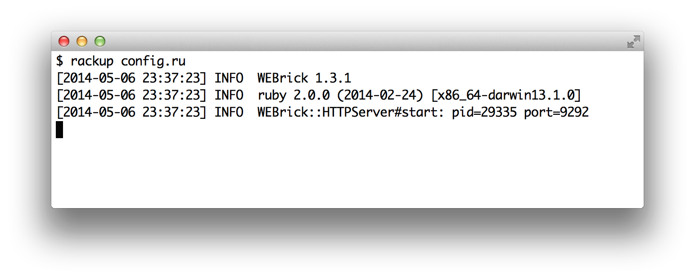
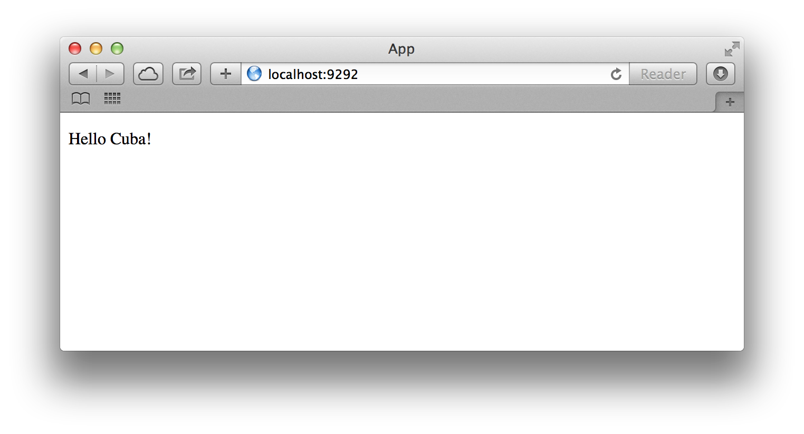

¡Hola Cuba!
Antes de empezar, necesitamos instalar Cuba. Puedes usar
el comando gem:
$ gem install cuba
Ahora que Cuba está instalado, es muy fácil crear una aplicación en Cuba.
Abre tu editor de texto favorito y crea un archivo llamado config.ru con
el siguiente código:
require "cuba"
Cuba.define do
on root do
res.write("Hello, Cuba!")
end
end
run(Cuba)
¡Ya tienes tu primera aplicación Cuba! Para verla en acción, sólo escribe
rackup config.ru en la línea de comandos.

Ahora abre un navegador e ingresa a http://localhost:9292/. Deberá aparecer un mensaje de bienvenida como el que se muestra más abajo:

NOTA: Para detener el servidor web, presiona
Ctrl+Cen la ventana donde está corriendo. Para verificar que el servidor se haya detenido debes ver el cursor de la línea de comandos nuevamente.
Como puedes ver, la sintaxis es muy legible. Vamos a discutir todos los detalles en la siguiente sección.